在文字模式下編寫 Java 程式，即使透過優秀的文字編輯器以及建構工具的輔助，實際上你還是會遇上一些麻煩的事情，例如在採用 Gradle 作為建構工具的情況下，你還是得自行建立專案目錄、安排建構檔案內容，在瞭解 Java 中套件結構之後，你還得為套件建立對應的目錄階層等 ... 有幾個方式可以解決這些麻煩，一是透過整合開發工具（Integrated Development Environment, IDE），二是編寫建構檔案內容，讓上述過程也可以自動化。
IDE 與建構工具在某些功能上或許有些重疊，但基本上並不衝突，IDE 上通常具備功能強大的編輯器、除錯器、專案檢視、物件瀏覽、外部資源整合（像是資料庫、伺服器）等非建構工具著重之功能。在 Java 的領域中不乏優秀的 IDE，這些 IDE 基本上都能整合建構工具，與建構工具補足彼此功能之不足。
在 Java 領域中，開放原始碼的 IDE 著名的有 NetBeans 與 Eclipse，入門 Java 的階段，可以從這兩個 IDE 開始認識，完整認識 IDE 的功能不會是本課程的內容，以下介紹將著重在 IDE 與建構工具的整合。
NetBeans
NetBeans 始於捷克布拉格查理大學（Charles University）數學及物理學院的學生計畫 Xelfi，該計畫後來延伸而成立了公司，Sun 後來收購了這間公司，並於隔年 2000 年時將其開放原始碼，目前 NetBeans 官方網站為 netbeans.org，撰寫本文時最新版本為 NetBeans IDE 7.4。 根據不同需求，你可以 下載不同的 Bundles 版本，NetBeans IDE 必須以 JDK 為基礎，因此作業系統上必須已安裝好 JDK，在安裝過程中，會要求你指定 JDK 位置：{kind=link}
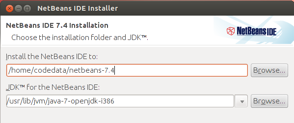
NetBeans 中建立的新專案，預設是以 Ant 作為建構工具，每個專案實體目錄結構下，都可以找到建構檔案 build.xml，可以讓你自定 Ant 任務（Task），而專案中有個 nbproject/build-impl.xml，是 NetBeans 本身管理專案時會使用到的一些內建任務。
{kind=link}
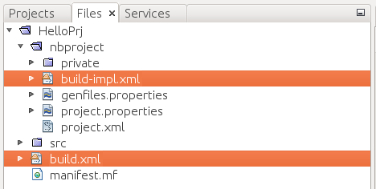
NetBeans 專案中幾個選單常用執行項目，其實都可以對應至 Ant 建構檔案定義的任務：
{kind=link}
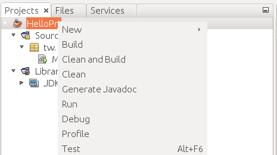
如果你有個 Ant 專案，也可以在 NetBeans 中建立「Java Free Form Project」，在「Build Script」指定你的建構檔案，接著就可以上圖中幾個選項對應的 Ant 任務：
{kind=link}
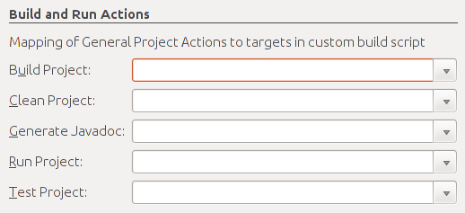
在 NetBeans 中，目前已整合 Maven，你可以在新建專案時選擇不同的專案類型：
{kind=link}
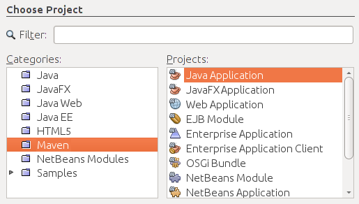
稍後會再來介紹 NetBeans 中如何結合 Gradle …
Eclipse
Eclipse 最初是由 IBM 公司開發，2001 年 11 月貢獻給開放原始碼社群，目前 Eclipse 的官方網站是 http://www.eclipse.org/，撰寫本文時最新版本為 Eclipse Standard 4.3.1，Eclipse 幾乎所有其他功能都以 plugin 形式附加於核心之上，因而你會看到各種不同的 Package Solutions。要運行 Eclipse，基本上你只需要有 Java 執行環境（Java Runtime Environment, JRE），不一定要安裝 JDK，Eclipse 擁有自己的 Java 開發工具（Java Development Tools, JDT），它是 Eclipse 核心的一部份，下載 Eclipse 壓縮檔解開之後，執行 eclipse 指令即可運行。
Eclipse 內建 Ant 與 Maven 的支援，你可以自行在專案中建立 build.xml，在選定 build.xml 時的右鍵單下的「Run As」、「Debug As」就會有「Ant Build」項目，你也可以在建立專案時選擇「Java Project from Existing Ant Buildfile」，設定你的「Ant buildfile」：
{kind=link}
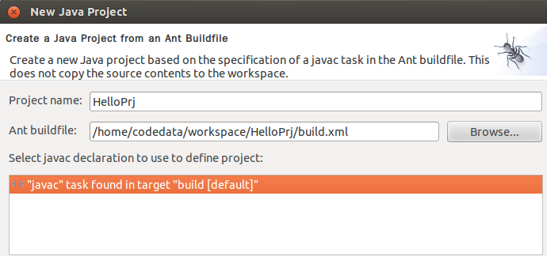
在 IDE 的「Windows/Preferences」功能中，也有個「Ant」項目可以設定 Ant 執行環境等細節：
{kind=link}
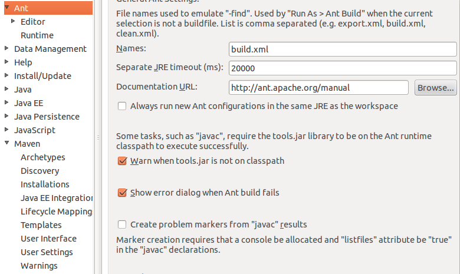
在上面的畫面中，你也看到了 Maven，這表示 Eclipse 中現也支援 Maven，你也可以在新建專案時選擇：
{kind=link}
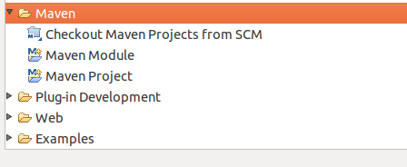
稍後會再來介紹 Eclipse 中如何結合 Gradle …
Gradle 與 IDE
當然，使用 IDE 最好是對底層工具的基本使用有所概念，才會知道 IDE 的能與不能，也才會知道 IDE 在開發上到底作了哪些協助，而且使用 IDE 會有負擔，如果你就是不想使用 IDE，那麼在使用 Gradle 時，像基本的專案目錄結構，能不能請 Gradle 來協助建立呢？Gradle 的建構檔案在撰寫時，是使用 Groovy 來設計的 DSL（Domain-Specific Language），build.gradle 本身就可視為可執行的 Groovy 原始碼檔案，因此，你可以在任務中撰寫建立目錄的程式碼，例如：
apply plugin: 'java'
task "create-dirs" << {
sourceSets*.java.srcDirs*.each { it.mkdirs() }
sourceSets*.resources.srcDirs*.each { it.mkdirs() }
}這麼一來，執行
gradle create-dirs，就會自動建立 src 目錄及其下各個子目錄。如果想讓你的 Gradle 專案，可以直接在 Eclipse 中進行匯入，可以在 build.gradle 中加上：
apply plugin: 'eclipse'然後執行
gradle eclipse，這樣就可以自動產生 Eclipse 專案需要的 .settings、.project、.classpath 等檔案，接著你就可以執行 Eclipse 選單的「File -> Import -> General -> Existing Projects into Workspaces」進行匯入：{kind=link}
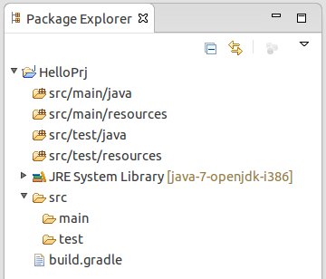
.classpath 是 Eclipse 管理類別路徑的檔案，如果你的 build.gradle 有加入新的相依管理，建議執行
gradle cleanEclipse 及 gradle ecipse，重新產生 .classpath 的內容，並於 Eclipse 中執行專案的「Refresh」（如果你想自行更新 .classpath，相依檔案預設會存放在使用者目錄的 .gradle 目錄中）。你可以在 The Eclipse Plugin 找到更多有關這個 plugin 的說明。
如果你想在 Eclipse 中可以直接管理相依性，或者是執行建構任務，亦可在 Eclipse 中安裝 eclipse-integration-gradle。
{kind=link}
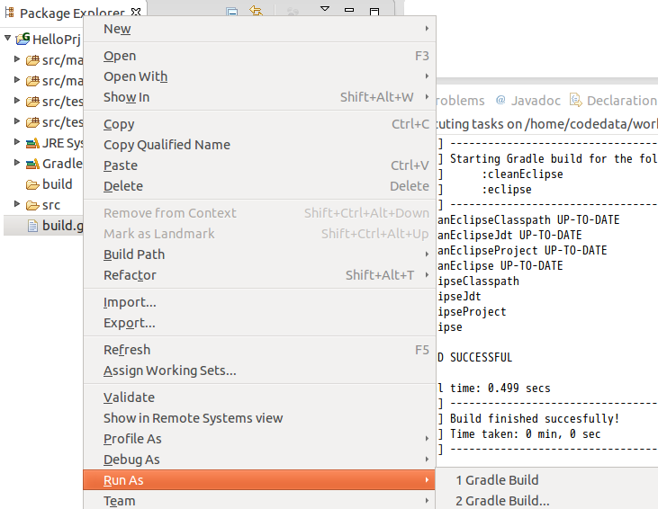
另一個使用 Gradle 直接建立專案目錄的方式，是使用 gradle-templates，相較於自行在 build.gradle 中撰寫 Groovy 以建立目錄，這會是個簡便的方式。
接下來以練習的方式，介紹如何在 NetBeans 中結合 Gradle …
練習 8：安裝、使用 NetBeans 與 Gradle Plugins
請至 https://netbeans.org/downloads/ 下載「Java EE」Bundle 的 NetBeans，下載後會是個 netbeans-7.4-javaee-linux.sh 檔案，在終端機中執行以下指令：
~$ chmod u+x netbeans-7.4-javaee-linux.sh
~$ ./netbeans-7.4-javaee-linux.sh按照安裝精靈指示完成安裝，完成後啟動桌面的 NetBeans 圖示，執行選單「Tools -> Plugins -> Available Plugins」，在「Search」中輸入「Gradle」，就可進行 Gradle Support 選擇與安裝：
{kind=link}
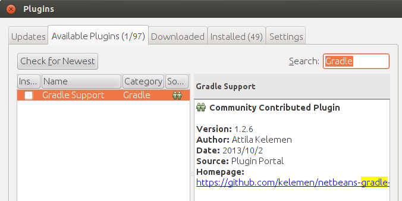
遵照指示完成安裝後，使用 NetBeans 選單「File -> Open Project」開啟 lab 檔案中 solutions/exercise7/Bank 專案，探索並試著執行上頭的 Gradle 相關任務：
{kind=link}
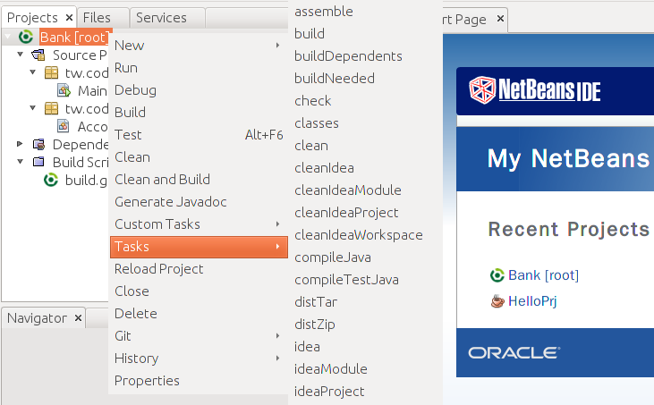
使用 NetBeans 選單「File -> Open Project」開啟 lab 檔案中 exercises/exercise7/Bank 專案，在 IDE 中試著重做一次 Java Tutorial 第二堂（3）中的 練習 7，看看會不會比較方便一些。